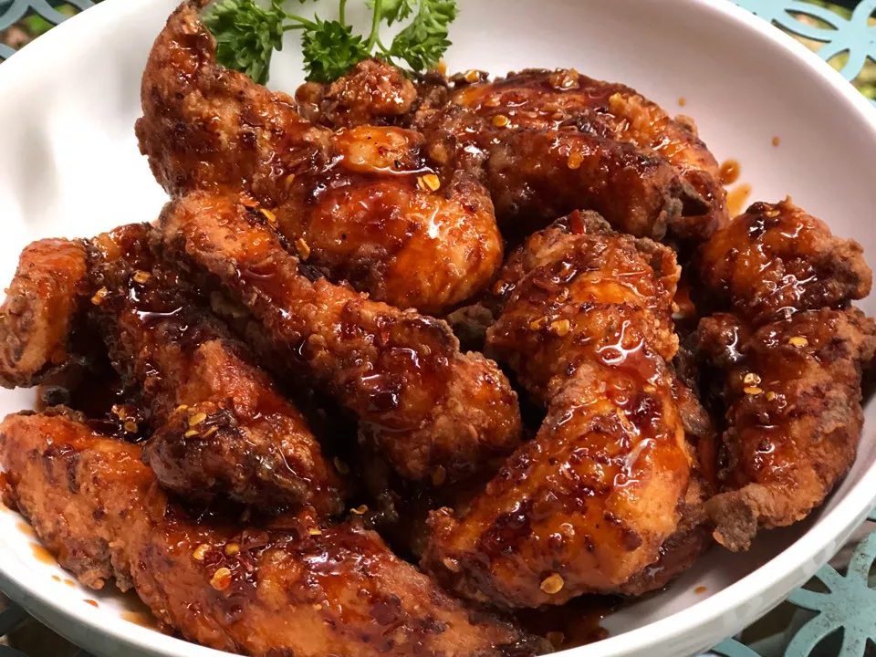

Spicy Korean Fried Chicken with Gochujang Sauce

Description
It took about two decades for this style of Korean fried chicken to make
its way into the American foodie scene. The chicken is deep fried twice to
make the exterior extra crispy and to lock moisture in. The gochujang
sauce is a hot, honey, spicy mix...and well, it's just fabulous. You'll
have the family completely raving!
Ingredients
- ⅓ cup milk
- 1 egg
- chicken
- all kinds of seasoning
- oil
Steps
-
Step 1
Whisk milk and egg together in a large bowl until thoroughly combined
and smooth. Add chicken tenders to egg wash and let marinate in the
refrigerator for 15 minutes.
-
Step 2
Combine flour, potato starch, salt, and pepper in a large mixing bowl.
Pour mixture into a large, resealable plastic bag. Drain and discard
marinade from chicken tenders. Add chicken to the bag, seal it, and
shake until each piece is completely dredged in mixture.